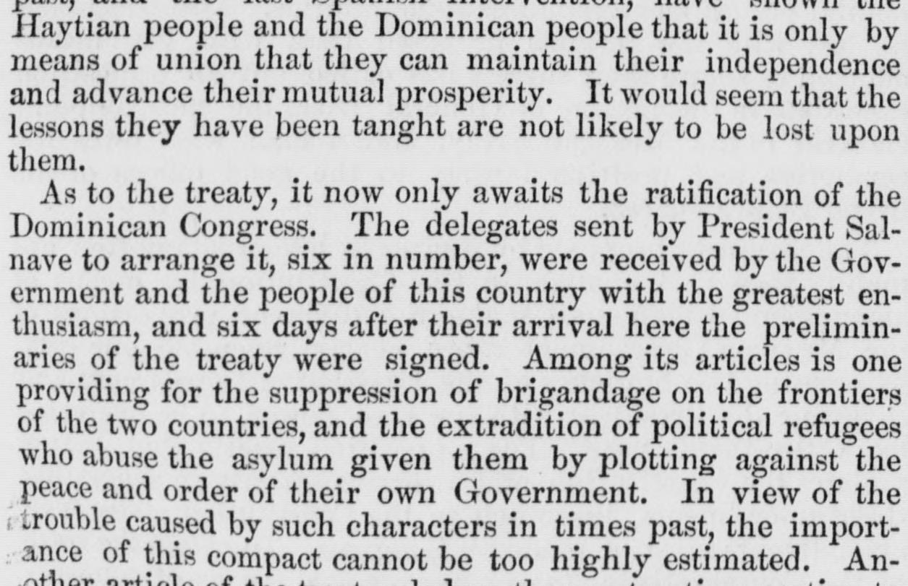

Santo Domingo.Santo Domingo.
The Irish Republic · Chicago, Ill. · October 19, 1867 · Page 6The Irish Republic · Chicago, Ill. · 19 de octubre de 1867 · Página 6 View the originalVer el original

A newly signed treaty between Haiti and St. Domingo includes articles providing for the suppression of frontier brigandage, the extradition of political refugees, the preservation of territorial integrity, and the settlement of claims dating from the 1844 separation. Because the treaty pledges that no portion of either territory will be alienated, the newspaper notes there is no longer any hope of the United States acquiring the bay of Samana by purchase. The agreement, initiated by Salnave's government and welcomed by the Dominican people, aims to heal 23 years of strife and is already benefiting the region through peace and resource development.Un reciente tratado suscrito entre Haití y Santo Domingo comprende estipulaciones tendientes a la represión de correrías y bandoleros fronterizos, la extradición de reos políticos, la preservación de la integridad territorial y el arreglo de reclamaciones pendientes desde la separación de 1844. Dado que el convenio consagra que ninguna fracción de ambos territorios podrá ser enajenada, el periódico hace notar que se desvanecen las aspiraciones de los Estados Unidos de adquirir por compra la bahía de Samaná. El acuerdo, promovido por la administración de Salnave y recibido con beneplácito por el pueblo dominicano, procura restañar veintitrés años de querellas y rinde ya provechosos frutos de paz y desarrollo en la región.
The articleEl artículo
The Irish Republic October 19, 186719 de octubre de 1867
Original in English.Original en inglés.
Santo Domingo.Santo Domingo.
Peace and progress are now the order of the day in this country. President Cabral's well-deserved popularity is on the increase, and his wise and energetic administration of affairs is inaugurating a new era of prosperity in St. Domingo. The most hopeful feature of the case is that he is backed in his efforts by a well organized and powerful national party, guided by enlightened views, and animated by sentiments of sincere patriotism. When the disturbances which brought Geffrard's career to an abrupt termination broke out in Hayti, it was feared by many here that the revolution in the neighboring republic would compromise us in some way or other; but the course adopted by Salnave on his accession to power speedily dissipated all apprehension on this score. The treaty of peace, amity and commerce which has just been concluded between the two republics cannot fail to produce the most beneficial result to both. The experience of the past, and the last Spanish intervention, have shown the Haytian people and the Dominican people that it is only by means of union that they can maintain their independence and advance their mutual prosperity. It would seem that the lessons they have been taught are not likely to be lost upon them.La paz y el progreso son ahora la orden del día en este país. La bien merecida popularidad del Presidente Cabral va en aumento, y su sabia y enérgica administración de los asuntos públicos está inaugurando una nueva era de prosperidad en Santo Domingo. El rasgo más prometedor del caso es que está respaldado en sus esfuerzos por un partido nacional bien organizado y poderoso, guiado por puntos de vista ilustrados y animado por sentimientos de sincero patriotismo. Cuando estallaron en Haití los disturbios que pusieron fin abrupto a la carrera de Geffrard, muchos aquí temieron que la revolución en la vecina república nos comprometiera de una forma u otra; pero el rumbo adoptado por Salnave al asumir el poder disipó rápidamente todo recelo a este respecto. El tratado de paz, amistad y comercio que se acaba de concertar entre las dos repúblicas no puede dejar de producir el resultado más beneficioso para ambas. La experiencia del pasado y la última intervención española han demostrado a los pueblos haitiano y dominicano que solo por medio de la unión podrán mantener su independencia y promover su mutua prosperidad. Pareciera que las lecciones recibidas no caerán en saco roto.
As to the treaty, it now only awaits the ratification of the Dominican Congress. The delegates sent by President Salnave to arrange it, six in number, were received by the Government and the people of this country with the greatest enthusiasm, and six days after their arrival here the preliminaries of the treaty were signed. Among its articles is one providing for the suppression of brigandage on the frontiers of the two countries, and the extradition of political refugees who abuse the asylum given them by plotting against the peace and order of their own Government. In view of the trouble caused by such characters in times past, the importance of this compact cannot be too highly estimated. Another article of the treaty pledges the contracting parties to preserve inviolate the integrity of their respective territories. No portion of either Hayti or St. Domingo is on any account to be alienated. This being so, there is now no hope of the United States becoming the owner by purchase of the bay of Samana. A third article provides for the healing of an old sore, viz.: the settlement of claims on both sides arising out of injury done to individual rights when the separation of St. Domingo from Hayti took place in 1844. This treaty was necessary for the prosperity of the two countries, which have been at strife with each other for the last 23 years; and it speaks volumes for Salnave, that one of the first acts of his Government was to make proposals of amity to St. Domingo. It redounds equally to the credit of President Cabral and the Dominican people that the overtures of the Haytians have been as heartily responded to.En cuanto al tratado, ahora solo espera la ratificación del Congreso dominicano. Los delegados enviados por el Presidente Salnave para concertarlo, en número de 6, fueron recibidos por el Gobierno y el pueblo de este país con el mayor entusiasmo, y 6 días después de su llegada aquí se firmaron los preliminares del tratado. Entre sus artículos se encuentra uno que dispone la supresión del bandolerismo en las fronteras de los 2 países y la extradición de los refugiados políticos que abusen del asilo concedido conspirando contra la paz y el orden de su propio Gobierno. En vista de las perturbaciones causadas por tales personajes en tiempos pasados, la importancia de este pacto no se puede ponderar en demasía. Otro artículo del tratado compromete a las partes contratantes a preservar inviolable la integridad de sus respectivos territorios. Ninguna porción de Haití ni de Santo Domingo podrá ser enajenada bajo ningún concepto. Siendo esto así, ya no queda esperanza alguna de que los Estados Unidos lleguen a ser dueños por compra de la bahía de Samaná. Un 3.er artículo prevé la curación de una vieja llaga, a saber: la liquidación de las reclamaciones de ambas partes derivadas de los perjuicios ocasionados a los derechos individuales cuando tuvo lugar la separación de Santo Domingo de Haití en 1844. Este tratado era necesario para la prosperidad de los 2 países, que han estado en conflicto entre sí durante los últimos 23 años; y dice mucho en favor de Salnave que 1 de los primeros actos de su Gobierno fuera hacer propuestas de amistad a Santo Domingo. Redunda igualmente en mérito del Presidente Cabral y del pueblo dominicano que a las propuestas de los haitianos se haya respondido con igual cordialidad.
The country is already feeling the good effects of this policy of peace, conciliation and progress, in the increasing developments of its resources, and in the spirit of hopefulness which has been awakened. The working of the copper mines is being vigorously prosecuted and with the most cheering results. An analysis of the ore has been made by Mr. Revot, engineer of the Mining School of Paris, and it has been demonstrated to be of excellent quality. Hitherto camels, imported from the Canary Islands, have been employed in working the mines, but so unexpectedly great has been the success obtained in this enterprise, and so cheering are the prospects, that it is now proposed to construct a railway from Santiago to the principal mining district. St. Domingo is indebted for the opening up of this new source of wealth principally to the enterprise and energy of citizens of the Unites States, of whom there are many now in the country, engaged in prospecting or in working mines. The export of guano from the little island of Alto Velo is on the increase, from 1,000 to 2,000 tuns being now shipped to the United States every month. The tobacco crop for this year is the largest that has been gathered for the last ten years. The Government has established a bank, which has commenced operations by issuing $100,000 in notes, redeemable in specie and guaranteed by the right of guano exportation. This will help the finances of the country, and enable the Government to make some arrangement for meeting the claims of those foreigners whose property was destroyed during the war of the Spanish intervention, among whom are some New York merchants. Confidence is increasing, and business is getting brisk.El país ya está sintiendo los buenos efectos de esta política de paz, conciliación y progreso en el creciente desarrollo de sus recursos y en el espíritu de esperanza que se ha despertado. La explotación de las minas de cobre se prosigue vigorosamente y con los resultados más alentadores. Un análisis del mineral ha sido realizado por el Sr. Revot, ingeniero de la Escuela de Minería de París, y se ha demostrado que es de excelente calidad. Hasta ahora se han empleado camellos, importados de las islas Canarias, en la explotación de las minas, pero tan inesperadamente grande ha sido el éxito obtenido en esta empresa, y tan halagüeñas son las perspectivas, que ahora se propone construir un ferrocarril desde Santiago hasta el principal distrito minero. Santo Domingo es deudor de la apertura de esta nueva fuente de riqueza principalmente a la iniciativa y energía de ciudadanos de los Estados Unidos, de los cuales hay muchos ahora en el país, ocupados en la prospección o en la explotación de minas. La exportación de guano de la pequeña isla de Alto Velo va en aumento, embarcándose ahora hacia los Estados Unidos de 1.000 a 2.000 toneladas cada mes. La cosecha de tabaco de este año es la mayor que se ha recogido en los últimos 10 años. El Gobierno ha establecido un banco, que ha comenzado sus operaciones emitiendo 100.000 $ en billetes, reembolsables en metálico y garantizados por el derecho de exportación de guano. Esto ayudará a las finanzas del país y permitirá al Gobierno hacer algún arreglo para satisfacer las reclamaciones de aquellos extranjeros cuyas propiedades fueron destruidas durante la guerra de la intervención española, entre los cuales se encuentran algunos comerciantes de Nueva York. La confianza va en aumento y los negocios se están volviendo muy activos.